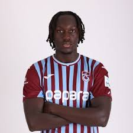
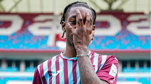

Forma Numarası: 1
Mevkii: Kaleci / Kaptan
Doğum Tarihi: 05.04.1996
Forma Numarası: 79
Mevkii: Defans / Sağ Bek
Doğum Tarihi: 21.01.2001
Forma Numarası: 19
Mevkii: Defans / Sol Bek
Doğum Tarihi: 05.05.1997
Forma Numarası: 15
Mevkii: Defans / Stoper
Doğum Tarihi: 08.01.1991
Forma Numarası: 44
Mevkii: Defans / Stoper
Doğum Tarihi: 05.03.2002
Forma Numarası: 5
Mevkii: Orta Saha / Merkez Orta Saha
Doğum Tarihi: 18.02.1994

Forma Numarası: 6
Mevkii: Orta Saha / Ön Libero
Doğum Tarihi: 12.01.2000

Forma Numarası: 10
Mevkii: Orta Saha / On Numara
Doğum Tarihi: 26.09.2000
Forma Numarası: 9
Mevkii: Orta Saha / Sol Kanat
Doğum Tarihi: 21.03.1989
Forma Numarası: 7
Mevkii: Orta Saha / Sağ Kanat
Doğum Tarihi: 17.02.1990
Forma Numarası: 17
Mevkii: Forvet / Santrafor
Doğum Tarihi: 13.08.1996